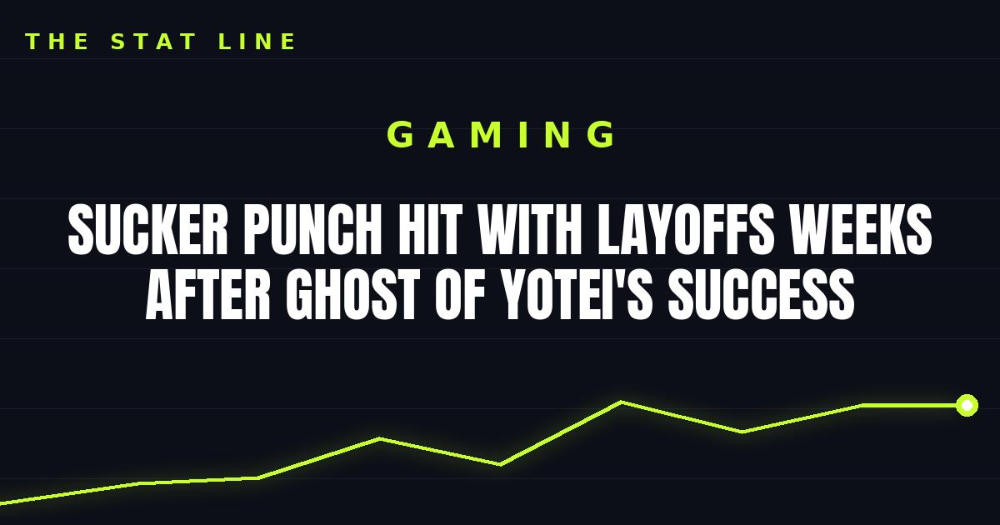

Sucker Punch Hit With Layoffs Weeks After Ghost of Yotei's Success
Sony's Sucker Punch Productions laid off 26 employees, reportedly citing market challenges — weeks after Ghost of Yotei's launch, with the game reportedly near 5.4 million copies sold.

What happened
Sucker Punch Productions, the studio behind Ghost of Yotei, has laid off 26 employees, according to a report from Aftermath citing a former employee and an internal letter from management. The letter reportedly cited "market challenges" and the team's needs while working on its next project.
The uncomfortable timing
The layoffs land against the backdrop of commercial success: unconfirmed reports put Ghost of Yotei at roughly 5.4 million copies sold since release last year, with revenue around $407 million — virtually matching Ghost of Tsushima's performance over the same period.
Why it matters
• A studio can ship a hit and still shrink — the games industry's layoff wave isn't waiting for flops anymore.
• Sucker Punch told staff more details on the future are coming next week.
• For players, the question is what this means for the studio's next project — and for the team that built one of PlayStation's signature worlds.
Sources: Riding high on success: Sony decides to lay off 26 Ghost of Yotei developers (ixbt.games, citing Aftermath); Gaming News: Latest Games News on Xbox, PlayStation, Nintendo (Gadgets 360).
Gear up: Razer — mice, keyboards, headsets and laptops.